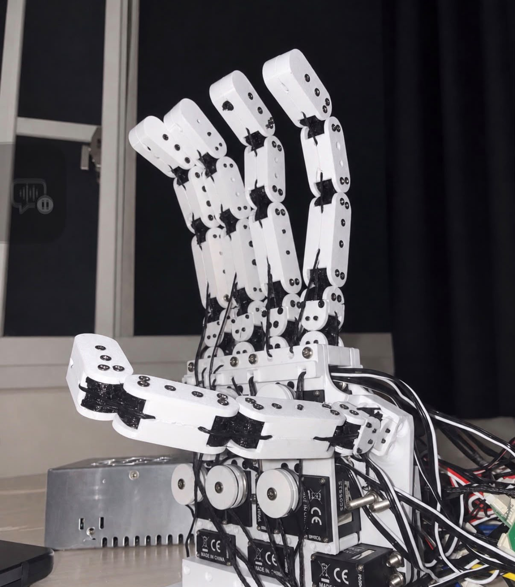
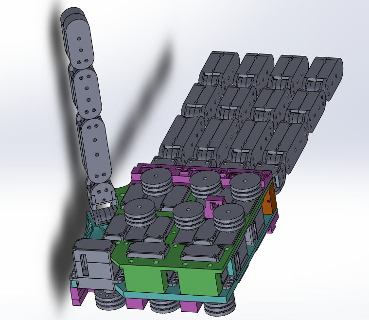
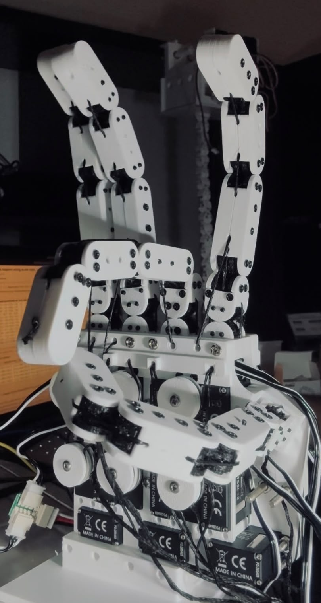
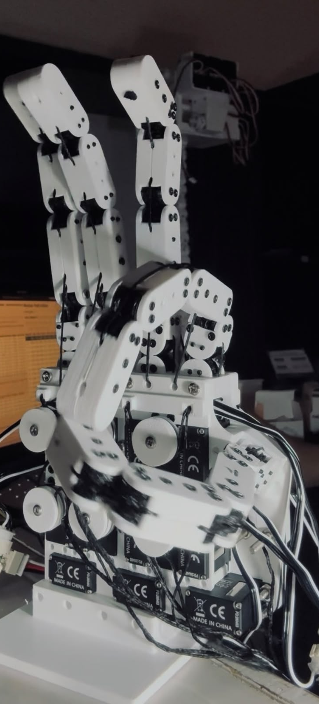

Compliant Mechanisms & Tendon Actuation
Tendon-Driven Compliant Robotic Hand
Built a 15-DoF robotic hand combining compliant finger joints with tendon-driven actuation.
OVERVIEW
Designed and built a 15-DoF robotic hand combining compliant finger joints with tendon-driven actuation.
Mechanical Design
Integrated compliant finger joints and tendon routing into a compact hand structure for articulated finger motion.


Control & Motion Testing
Controlled individual finger movements and demonstrated commanded hand gestures and thumb-to-fingertip contact.

